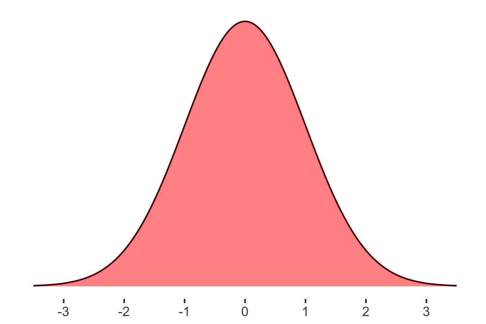
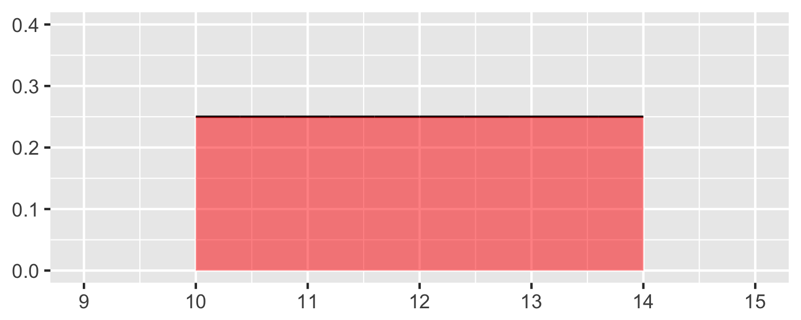
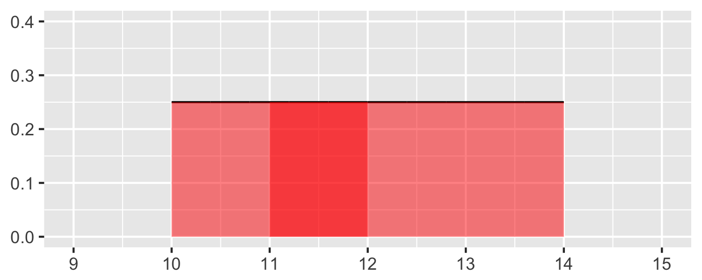
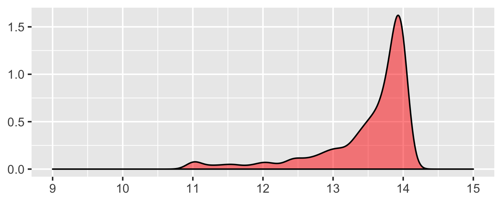

Samuel Burer
Last updated: September 10, 2018
Continuous random variables (CRVs) have many similarities with discrete random variables (DRVs)
Our discussion will lead to one of the most important distributions in statistics…the normal distribution

Otis Elevator in Bloomington, Indiana, reported that the number of hours lost per week last year due to employees’ illnesses was approximately normally distributed, with a mean of 60 hours and a standard deviation of 15 hours. Determine, for a given week, the following probabilities:
The number of hours lost will exceed 85 hours.
The number of hours lost will be between 45 and 55 hours.
Will solve later
A mail-order company has estimated one-year demand for a popular item to be normally distributed with a mean of 180,000 units and a standard deviation of 15,000 units.
What is the probability of selling all of the stock on hand if inventory equals 200,000 units?
What inventory should the company have on hand if they want the probability of running out of stock to be 5%?
Will solve later
Recall:
In contrast to DRVs:
A continuous RV can take on any value within a specified interval
The outcomes of a CRV cannot be counted or listed, like those of a DRV, but instead are measured
Examples:
A probability density function (PDF) of a CRV \(X\) is a curve on a graph such that:
Also:
Example: A delivery truck
The warehouse says that the delivery truck will arrive sometime “between 10 AM and 2 PM.”
What is the probability that the truck will arrive between 11 AM and 12 PM?

Probability evenly (“uniformly”) distributed between 10 and 14

Probability between 11 and 12 is \(P(11 \le X \le 12) = 0.25 = 25\)%

Could this be reality??
Since a CRV has so many possible outcomes, we do not consider things like:
Instead, we consider intervals:
In fact, \(P(X = x) = 0\) for any value \(x\)
We have talked about CDFs for DRVs. Same idea for CRVs…
We will see a demo of the CDF for the normal distribution
The CDF is important because it helps us calculate probabilities associated with \(X\)
Important facts (see p.117)
The expected value \(E(X)\) of a CRV \(X\) is the average of all the possible values for X, weighted by the probabilities
The standard deviation \(\sigma\) is a measure of how far the values of \(X\) differ from (or deviate from) its expected value, \(E(X)\)